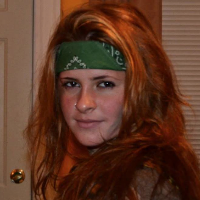

Cochairs

Matt Marber
Cochair
Katie Kurtz
Cochair
About Us
Concert Board bring concerts and other music events to the Tufts Medford-Somerville campus, open to all Tufts students. Our past line-ups have included Childish Gambino, Nelly, Lupe Fiasco, White Panda, Matt&Kim, and more! We also have undergraduate bands compete at Battle of the Bands.
Members of the board get experience in planning and executing events, as well as selecting and working with talent and agents.
Check out the videos below, which highlight the two major concerts we put together for 2014. Get excited for Spring Fling 2015!
Spring Fling
Spring Fling 2014
Childish Gambino, Flossdramadus, The New Pornographers
Cage Rage
Cage Rage 2014
MSMR, STRFKR, Gentleman Hall